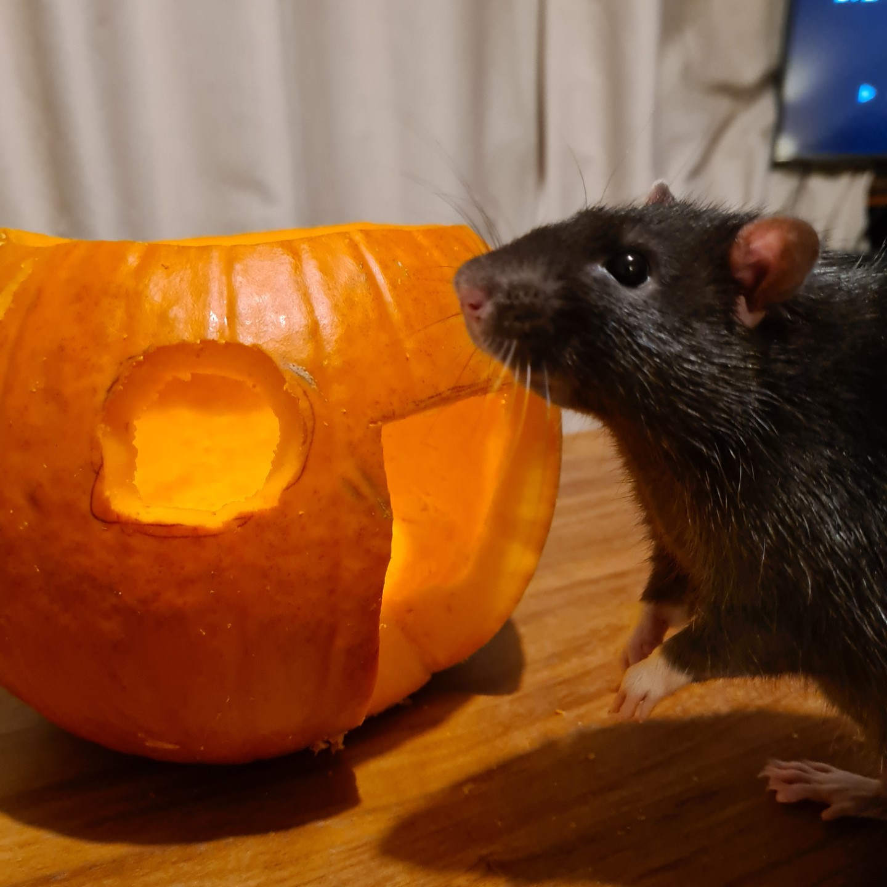
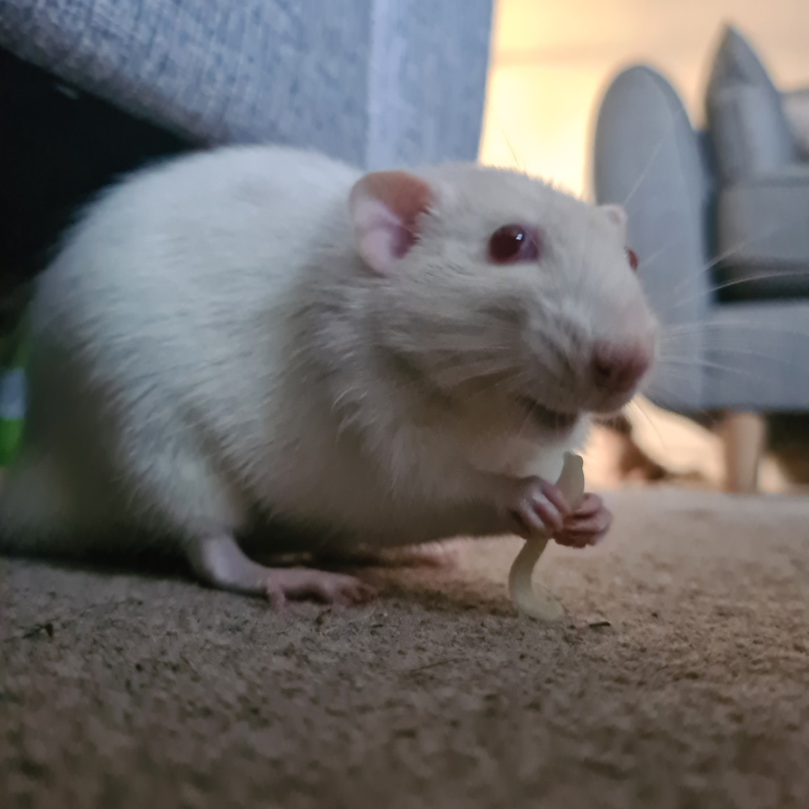
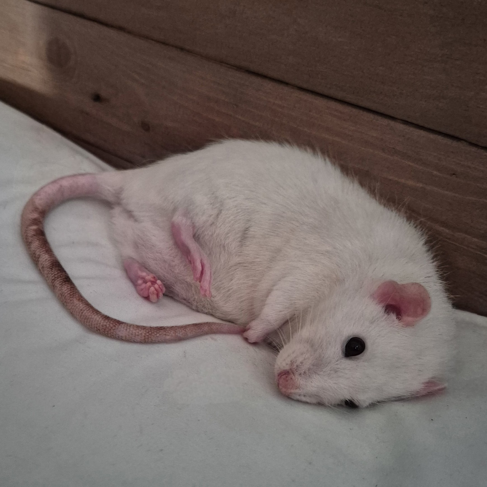
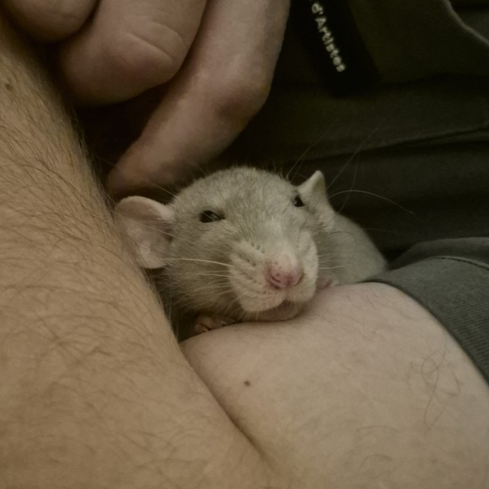
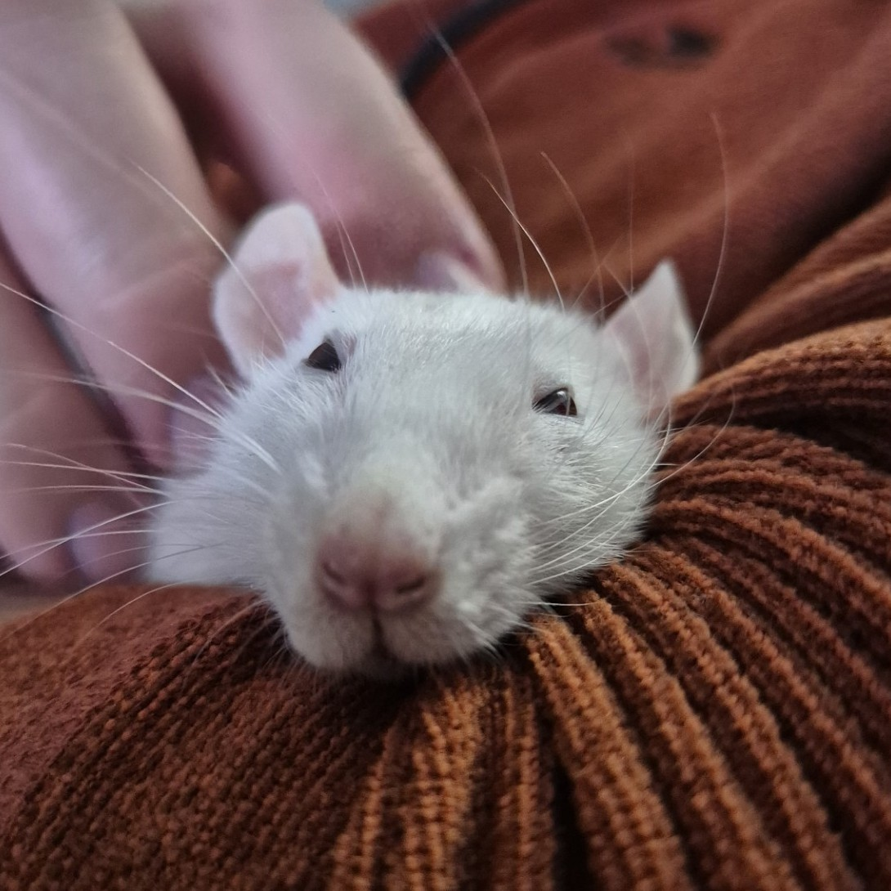
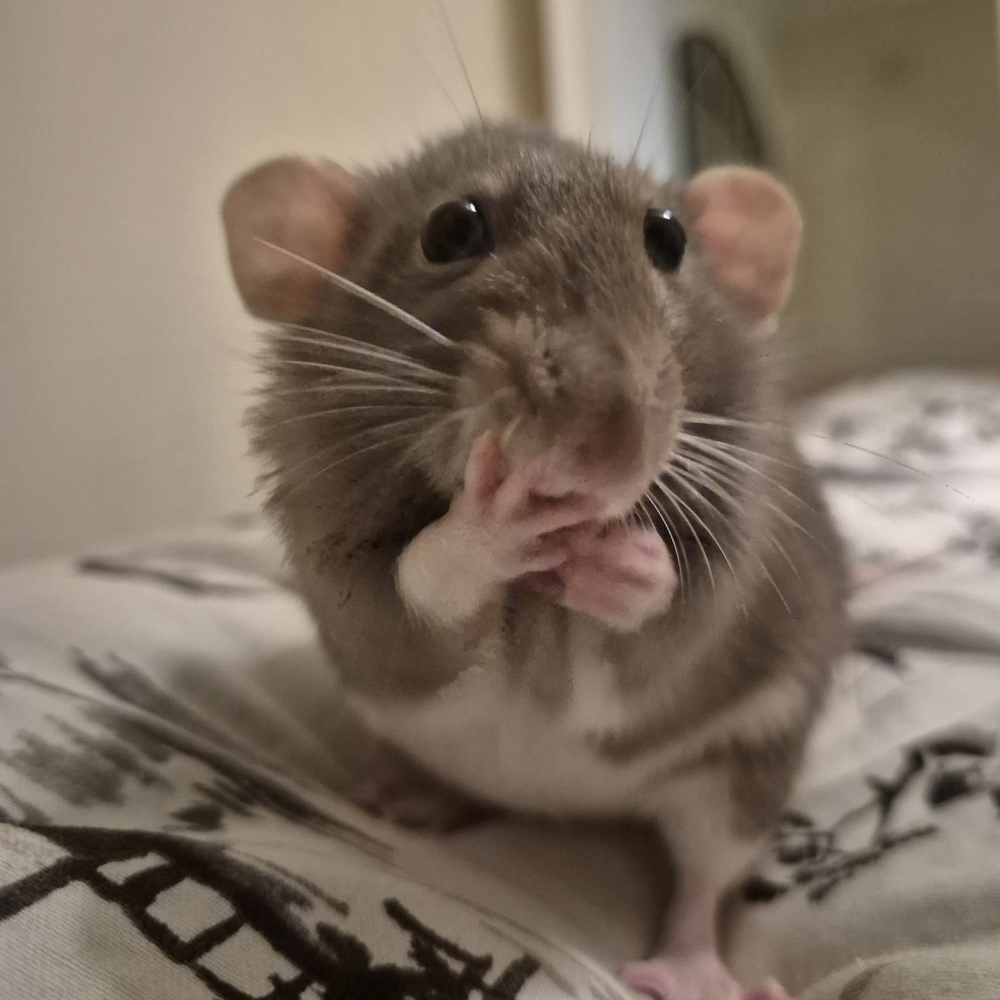
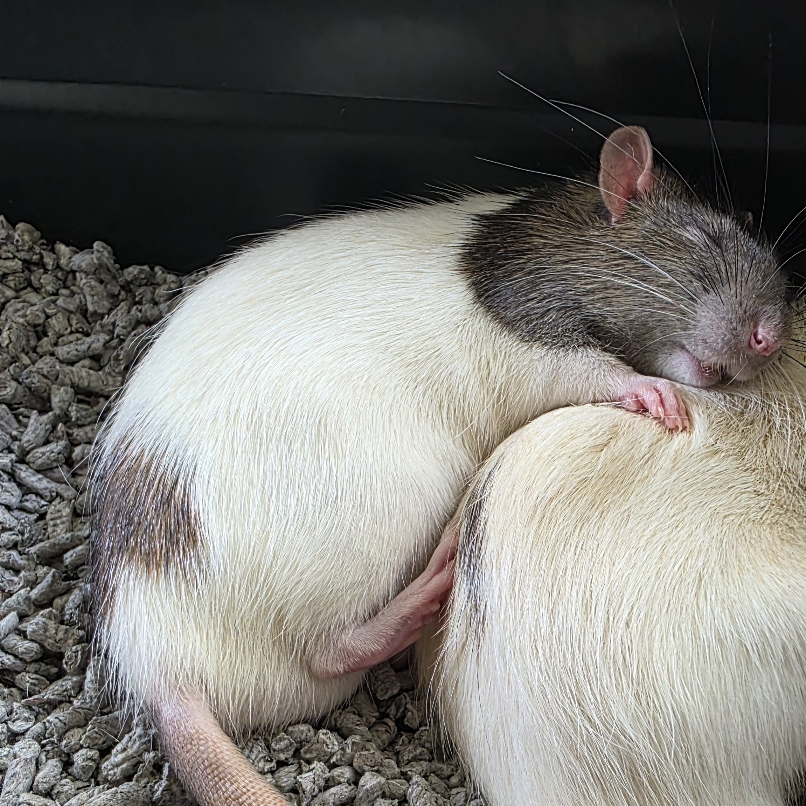
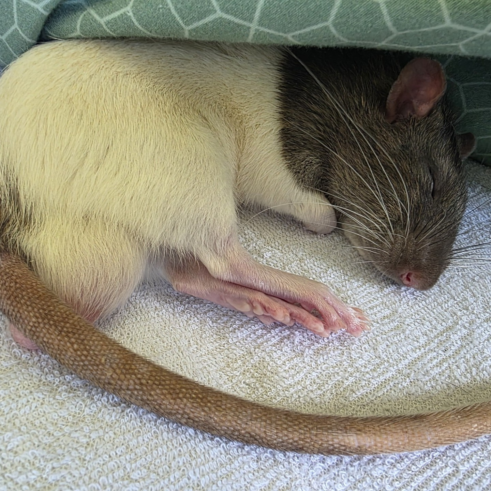
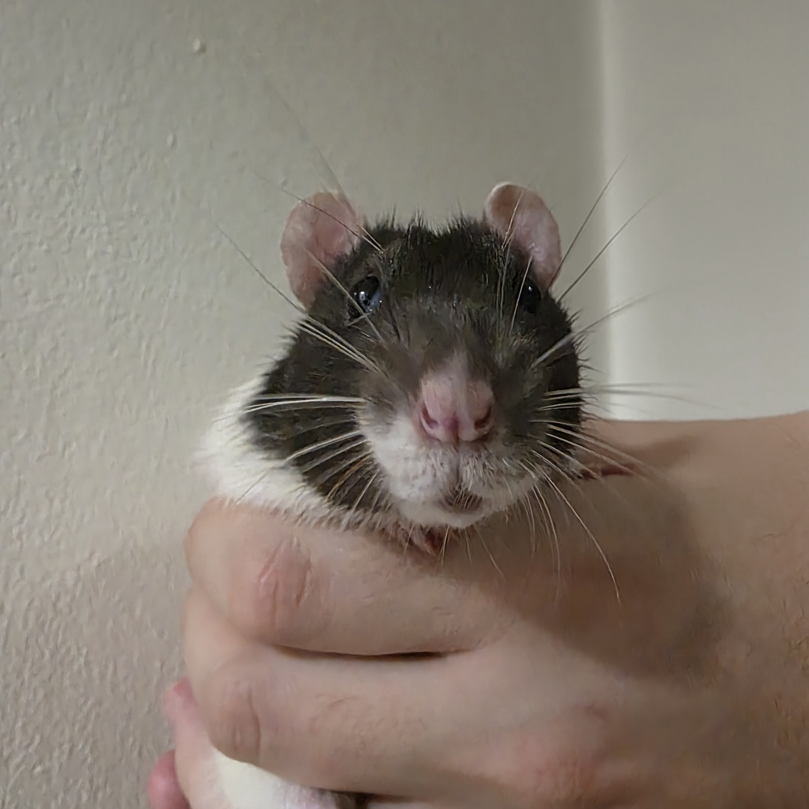

A Very Important Introduction
Our Fancy Rats
| ◆ |
We became parents to nine fancy rats, who have been an important part of our story together.
Our first Mischief


Our first experience with girl rats




Our rescued boys


